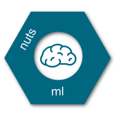

Welcome to nuts-ml¶
nuts-ml is a data pre-processing library for GPU-based deep learning that provides common pre-processing functions as independent, reusable units. These so called ‘nuts’ can be freely arranged to build data flows that are efficient, easy to read and modify. The following example gives a taste of a nuts-ml data-flow that trains a network on image data and prints training loss and accuracy
(train_samples >> Stratify(1) >> read_image >> transform >> augment >>
Shuffle(100) >> build_batch >> network.train() >>
Print('train loss:{} acc:{}') >> Consume())
It is very easy to extend nuts-ml with your own custom nuts . For instance, a nut that filters out (almost) black images could be implemented as
@nut_filter
def NotBlack(sample, threshold):
image, label = sample
return sum(image) > threshold
and then can be plugged into the flow
... >> read_image >> NotBlack(10) >> transform >> ...
For a quick start read the Introduction and have a look at the code examples . The Tutorial explains some of the examples in detail and if you are not familiar with nuts-flow, the library nuts-ml is based on, reading its documentation is recommended. Skim over the short description of all nuts in the Overview for an overall impression of the available functionality.